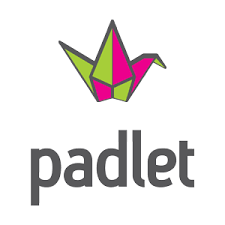

Escogemos un autor o autora e investigamos
Ahora que ya conocéis los aspectos básicos sobre la Generación del 27, tenéis que investigar en profundidad sobre un autor en concreto. Anotad un poco de su biografía, pero centraros sobre todo en su trayectoria poética y el estilo de sus composiciones. Anotad ejemplos reales de sus obras y empaparos de su manera de entender la poesía porque será esencial para realizar el trabajo final. Presentad en Padlet vuestra investigación para compartirla con la clase.
| Agrupamiento en parejas | Herramienta: Ordenadores de aula | Presentación: Padlet |
 |
 |
 |